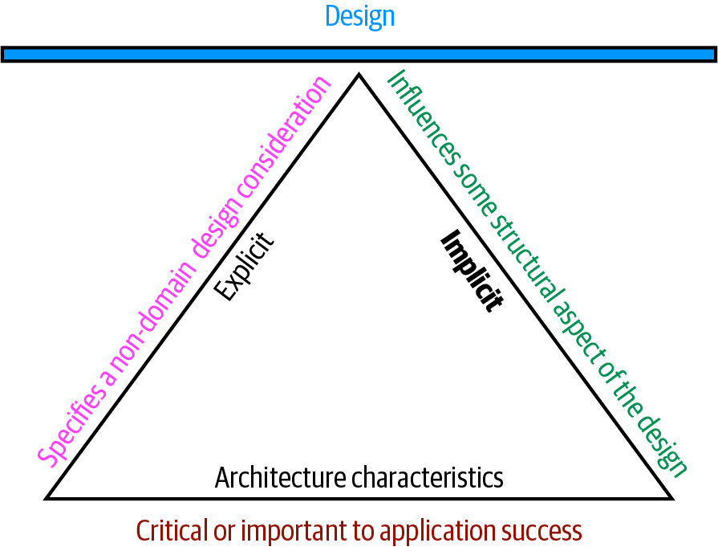
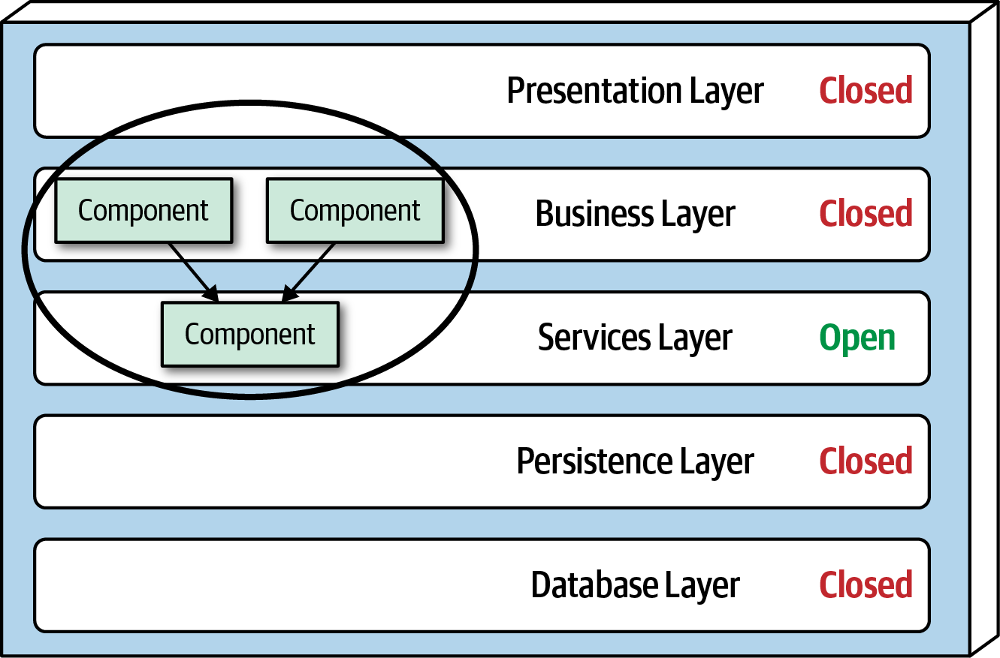

Alma Mater Studiorum - Università di Bologna
Computer Science and Engineering Department (DISI)
Enterprise Software Architectures
A. Croatti
Laboratory of Software Systems
A.Y. 2020/2021
The role of “Software Architect”

Architecture is about the important stuff… whatever that is!
(Martin Fowler, “Who Needs an Architect?”, IEEE, 2003)
- The (software) architect is the person (or people) who worries about the important stuff
- The role of software architect embodies a massive amount and scope of responsibility that continues to expand

Defining A Software Architecture
-
Some architects refer to software architecture as the blueprint of the system…
- … while others define it as the roadmap for developing a system
-
Four main dimensions
- the structure of the system combined with
- architecture characteristics the system must support,
- architecture decisions,
- and finally design principles
Structure of the System

-
The Structure of the system refers to the type of architecture style(s) the system is implemented in
- such as microservices, layered, or microkernel, …
-
Describing an architecture solely by the structure does not fully clarify an architecture
- Knowledge of the architecture characteristics, architecture decisions, and design principles is also needed to fully understand the architecture of the system
Architecture Characteristics

-
Architecture Characteristics define the success criteria of a system
- which is generally orthogonal to the functionality of the system
-
Notice that all of the characteristics listed do not require knowledge of the functionality of the system
- yet they are required in order for the system to function properly
Architecture Decisions

-
Architecture decisions define the rules for how a system should be constructed
- form the constraints of the system and direct the development teams on what is and what isn’t allowed
-
If a particular architecture decision cannot be implemented in one part of the system due to some condition or other constraint, that decision (or rule) can be broken through something called a variance
Design Principles

- A design principle differs from an architecture decision in that a design principle is a guideline rather than a hard-and-fast rule
Expectations of a software architect
-
There are eight core expectations placed on a software architect
- irrespective of any given role, title, or job description…
-
The first key to effectiveness and success in the software architect role depends on understanding and practicing each of these expectations
-
Make architecture decisions
-
Continually analyze the architecture
-
Keep current with latest trends
-
Ensure compliance with decisions
-
Diverse exposure and experience
-
Have business domain knowledge
-
Possess interpersonal skills
-
Understand and navigate politics
(1) Make Architecture Decisions
An architect is expected to define the architecture decisions and design principles used to guide technology decisions within the team, the department, or across the enterprise
-
An architect should guide rather than specify technology choices
-
Guiding technology choices through architecture decisions and design principles is difficult
- The key to making effective architectural decisions is asking whether the architecture decision is helping to guide teams in making the right technical choice or whether the architecture decision makes the technical choice for them.
-
An architect on occasion might need to make specific technology decisions in order to preserve a particular architectural characteristic such as scalability, performance, or availability
- In this case it would be still considered an architectural decision, even though it specifies a particular technology
(2) Continually Analyze the Architecture
An architect is expected to continually analyze the architecture and current technology environment and then recommend solutions for improvement
-
This expectation of an architect refers to architecture vitality, which assesses how viable the architecture that was defined three or more years ago is today, given changes in both business and technology
-
Not enough architects focus their energies on continually analyzing existing architectures
- As a result, most architectures experience elements of structural decay, which occurs when developers make coding or design changes that impact the required architectural characteristics, such as performance, availability, and scalability
-
An architect must holistically analyze changes in technology and problem domains to determine the soundness of the architecture
- Architects must meet this expectation to keep applications relevant
(3) Keep Current with Latest Trends
An architect is expected to keep current with the latest technology and industry trends
-
Developers must keep up to date on the latest technologies they use to remain relevant
-
An architect has an even more critical requirement to keep current on the latest technical and industry trends
- The decisions an architect makes tend to be long-lasting and difficult to change
-
Understanding and following key trends helps the architect prepare for the future and make the correct decision
(4) Ensure Compliance with Decisions
An architect is expected to ensure compliance with architecture decisions and design principles
- Ensuring compliance means that the architect is continually verifying that development teams are following the architecture decisions and design principles defined, documented, and communicated by the architect
(5) Diverse Exposure and Experience
An architect is expected to have exposure to multiple and diverse technologies, frameworks, platforms, and environments
-
This expectation does not mean an architect must be an expert in every framework, platform, and language, but rather that an architect must at least be familiar with a variety of technologies
- Most environments these days are heterogeneous, and at a minimum an architect should know how to interface with multiple systems and services, irrespective of the language, platform, and technology those systems or services are written in
-
One of the best ways of mastering this expectation is for the architect to stretch their comfort zone.
- An effective software architect should be aggressive in seeking out opportunities to gain experience in multiple languages, platforms, and technologies
(6) Have Business Domain Knowledge
An architect is expected to have a certain level of business domain expertise
- Effective software architects understand not only technology but also the business domain of a problem space
- Without business domain knowledge, it is difficult to understand the business problem, goals, and requirements, making it difficult to design an effective architecture to meet the requirements of the business
(7) Possess Interpersonal Skills
An architect is expected to possess exceptional interpersonal skills, including teamwork, facilitation, and leadership
-
Having exceptional leadership and interpersonal skills is a difficult expectation for most developers and architects
- As technologists, developers and architects like to solve technical problems, not people problems
-
An architect is not only expected to provide technical guidance to the team, but is also expected to lead the development teams
- Leadership skills are at least half of what it takes to become an effective software architect, regardless of the role or title the architect has
(8) Understand and Navigate Politics
An architect is expected to understand the political climate of the enterprise and be able to navigate the politics
-
Almost every decision an architect makes will be challenged
- Architectural decisions will be challenged by product owners, project managers, and business stakeholders due to increased costs or increased effort (time) involved
-
Architectural decisions will also be challenged by developers who feel their approach is better
-
The architect must navigate the politics of the company and apply basic negotiation skills to get most decisions approved
“Laws of Software Architecture”
First Law of Software Architecture
Everything in software architecture is a trade-off
- Nothing exists on a nice, clean spectrum for software architects; every decision must take into account many opposing factors
Corollary 1
If an architect thinks they have discovered something that isn’t a trade-off, more likely they just haven’t identified the trade-off yet
Second Law of Software Architecture
“Why” is more important than “how”
- An architect can look at an existing system they have no knowledge of and ascertain how the structure of the architecture works
- but will struggle explaining why certain choices were made versus others
Architectural Thinking
An architect sees things differently from a developer’s point of view, much in the same way a meteorologist might see clouds differently from an artist’s point of view
There are four main aspects of thinking like an architect:
- understanding the difference between architecture and design, and knowing how to collaborate with development teams to make architecture work
- having a wide breadth of technical knowledge while still maintaining a certain level of technical depth, allowing the architect to see solutions and possibilities that others do not see
- understanding, analyzing, and reconciling trade-offs between various solutions and technologies
- understanding the importance of business drivers and how they translate to architectural concerns
Architecture vs. Design: the worst scenario

Architecture vs. Design: the best scenario

Technical Breadth
- A software architect must have a significant amount of technical breadth to think like an architect (and see things with an architecture point of view)
- Unlike a developer, that who must have a significant amount of technical depth…

-
A large part of the value of an architect is a broad understanding of technology and how to use it to solve particular problems
-
As an architect, breadth is more important than depth
- Because architects must make decisions that match capabilities to technical constraints, a broad understanding of a wide variety of solutions is valuable
Analyzing Trade-Offs
- Thinking like an architect is all about seeing trade-offs in every solution, technical or otherwise
- and analyzing those trade-offs to determine what is the best solution
Architecture is the stuff you can’t Google!
- Everything in architecture is a trade-off, which is why the famous answer to every architecture question in the universe is “it depends”
- While many people get increasingly annoyed at this answer, it is unfortunately true…
An Example
You cannot Google the answer to whether REST or messaging would be better, or whether microservices is the right architecture style, because it does depend. It depends on the deployment environment, business drivers, company culture, budgets, timeframes, developer skill set, and dozens of other factors. Everyone’s environment, situation, and problem is different, hence why architecture is so hard
Understanding Business Drivers
-
Thinking like an architect is understanding the business drivers that are required for the success of the system
- and translating those requirements into architecture characteristics
- such as scalability, performance, availability, …
-
This is a challenging task that requires the architect to have some level of business domain knowledge
- and healthy, collaborative relationships with key business stakeholders
Balancing Architecture and Hands-On Coding
Avoiding the bottleneck trap
- The bottleneck trap occurs when the architect has taken ownership of code within the critical path of a project and becomes a bottleneck to the team
- This happens because the architect is not a full-time developer and therefore must balance between playing the developer role and the architect role
Balancing Architecture and Hands-On Coding
The role of Proof-of-Concepts (POCs)
-
POCs helps validate an architecture decision by taking the implementation details into account
-
If an architect is stuck trying to make a decision between two caching solutions, one effective way to help make this decision is to develop a working example in each caching product and compare the results
- This allows the architect to see first-hand the implementation details and the amount of effort required to develop the full solution
- It also allows the architect to better compare architectural characteristics
-
When doing proof-of-concept work is that, whenever possible, the architect should write the best production-quality code they can
- POCs code goes into the source code repository and becomes the reference architecture or guiding example for others to follow
- By writing production-quality proof-of-concept code, the architect gets practice writing quality, well-structured code rather than continually developing bad coding practices
Modularity in Software Architectures
Modularity is an organizing principle
If an architect designs a system without paying attention to how the pieces wire together they end up creating a system that presents myriad difficulties
-
Understanding modularity and its many incarnations is critical skill for architects
- Many of the tools we have to analyze architecture (such as metrics, fitness functions, and visualizations) rely on these modularity concepts
-
For discussions about architecture, modularity is a general term to denote a related grouping of code
-
Measuring Modularity - We have a variety of language-agnostic metrics measure modularity.
- In particular: cohesion, coupling, and connascence
Cohesion
-
Cohesion refers to what extent the parts of a module should be contained within the same module
- In other words, it is a measure of how related the parts are to one another
-
Ideally, a cohesive module is one where all the parts should be packaged together because breaking them into smaller pieces would require coupling the parts together via calls between modules to achieve useful results
Attempting to divide a cohesive module would only result in increased coupling and decreased readability.
- Cohesion is a less precise metric than coupling
- Often, the degree of cohesiveness of a particular module is at the discretion of a particular architect
range of cohesion measures
| Type | Description |
|---|---|
| Functional cohesion | Every part of the module is related to the other, and the module contains everything essential to function |
| Sequential cohesion | Two modules interact, where one outputs data that becomes the input for the other |
| Communicational cohesion | Two modules form a communication chain, where each operates on information and/or contributes to some output |
| Procedural cohesion | Two modules must execute code in a particular order |
| Temporal cohesion | Modules are related based on timing dependencies |
| Logical cohesion | The data within modules is related logically but not functionally |
| Coincidental cohesion | Elements in a module are not related other than being in the same source file; this represents the most negative form of cohesion |
Lack of Cohesion in Methods (LCOM)
Definition
- Consider a Class $C_1$ with $n$ methods $M_1,M_2,…,M_n$.
- Let $\{I_j\}$ the set of instance variables used by method $M_i$.
- There are $n$ such sets $\{I_1\},…,\{I_n\}$.
- Let $P=\{(I_i,I_j)|I_i \cap I_j = \emptyset\}$ and $Q=\{(I_i,I_j)|I_i \cap I_j \neq \emptyset\}$
- If all $n$ sets $\{I_1\},…,\{I_n\}$ are $\emptyset$ the let $P=\emptyset$
$LCOM = \begin{cases}|P| - |Q| & \text{ if } |P| > |Q| \\0 & \text{ otherwise }\end{cases}$
- A high LCOM score indicates a high lack of cohesion in methods of a class
Example
- Consider a class $C$ with three methods $M_1,M_2,M_3$.
- Let $\{I_1\} = \{a,b,c,d,e\}$ and $\{I_2\} = \{a,b,e\}$ and $\{I_3\} = \{x,y,z\}$
- We observe that:
- $\{I_1\}\cap\{I_2\} \neq \emptyset$
- $\{I_1\}\cap\{I_3\} = \emptyset$
- $\{I_2\}\cap\{I_3\} = \emptyset$
- So:
- $|P| = 2$ (number of null intersections)
- $|Q| = 1$ (number of nonempty intersections)
- Then:
-
- $|LCOM| = |P| - |Q| = 1$
-
Lack of Cohesion in Methods (LCOM) - Example

In Figure fields appear as single letters and methods appear as blocks. In Class X, the LCOM score is low, indicating good structural cohesion. Class Y, however, lacks cohesion; each of the field/method pairs in Class Y could appear in its own class without affecting behavior. Class Z shows mixed cohesion, where developers could refactor the last field/method combination into its own class.
Lack of Cohesion in Methods (LCOM)
-
The LCOM metric is useful to architects who are analyzing code bases in order to move from one architectural style to another
-
Using the LCOM metric can help architects find classes that are incidentally coupled and should never have been a single class to begin with
- E.g., shared utility classes
-
Many software metrics have serious deficiencies, and LCOM is not immune
- All this metric can find is structural lack of cohesion
- It has no way to determine logically if particular pieces fit together
- This reflects back on our 2nd Law of Software Architecture: prefer why over how!
Coupling
-
Fortunately, we have better tools to analyze coupling in code bases
- Partially based on graph theory…
-
Afferent and Efferent coupling
- Afferent coupling measures the number of incoming connections to a code artifact (component, class, function, and so on)
- Efferent coupling measures the outgoing connections to other code artifacts
Coupling Metrics: Abstractness
- Abstractness is the ratio of abstract artifacts (abstract classes, interfaces, and so on) to concrete artifacts (implementation)
- It represents a measure of abstractness versus implementation
$$A=\frac{\sum m^a}{\sum m^c}$$
-
In the equation, $m^a$ represents abstract elements (interfaces or abstract classes) with the module, and $m^c$ represents concrete elements (nonabstract classes)
-
Architects calculate abstractness by calculating the ratio of the sum of abstract artifacts to the sum of the concrete ones
Coupling Metrics: Instability
- Instability is defined as the ratio of efferent coupling to the sum of both efferent and afferent coupling
$$I=\frac{\sum c^e}{\sum c^e + c^a}$$
-
In the equation, $c^e$ represents efferent (or outgoing) coupling, and $c^a$ represents afferent (or incoming) coupling
-
The instability metric determines the volatility of a code base
- A code base that exhibits high degrees of instability breaks more easily when changed because of high coupling
-
An Example - If a class calls to many other classes to delegate work ($C^e \gg C^a$), the calling class shows high susceptibility to breakage if one or more of the called methods change
Distance from the Main Sequence
- One of the few holistic metrics architects have for architectural structure is distance from the main sequence
- A derived metric based on instability ($I$) and abstractness ($A$)
- Note that both abstractness and instability are ratios: their result is within the range $[0,1]$
$$ D = | A + I - 1 | $$


- zone of uselessness: code that is too abstract becomes difficult to use
- zone of pain: code with too much implementation and not enough abstraction
Connascence
-
Two components are connascent if a change in one would require the other to be modified in order to maintain the overall correctness of the system
-
Two main categories of Connascence Types:
- Static Connascence - Refers to source-code-level coupling
- Dynamic Connascence - Refers to execution-time coupling
-
Architects have a harder time determining dynamic connascence because we lack tools to analyze runtime calls as effectively as we can analyze the call graph
Static Connascence
| Type | Description |
|---|---|
| Connascence of Name | Multiple components must agree on the name of an entity - Names of methods represent the most common way that code bases are coupled |
| Connascence of Type | Multiple components must agree on the type of an entity - Refers to the common facility to limit variables/parameters to specific types |
| Connascence of Meaning | Multiple components must agree on the meaning of particular values - The most common obvious case for this type of connascence in code bases is hard-coded numbers rather than constants |
| Connascence of Position | Multiple entities must agree on the order of values - This is an issue with parameter values for method calls - E.g., the method updateSeat(String name, String seat) called as updateSeat("14D", "Turing, A.M.") |
| Connascence of Algorithm | Multiple components must agree on a particular algorithm - E.g., occurs when a developer defines a security hashing algorithm that must run on both the server and client and produce identical results to authenticate a user |
Dynamic Connascence
| Type | Description |
|---|---|
| Connascence of Execution | The order of execution of multiple components is importantemail = new Email(); |
| Connascence of Timing | The timing of the execution of multiple components is important - The common case is a race condition caused by two threads executing at the same time, affecting the outcome of the joint operation |
| Connascence of Values | Occurs when several values relate on one another and must change together - A common and problematic case involves transactions, especially in distributed systems |
| Connascence of Identity | Occurs when multiple components must reference the same entity |
Connascence Strength

-
Architects determine the strength of connascence by the ease with which a developer can refactor that type of coupling
- different types of connascence are demonstrably more desirable
-
Architects and developers can improve the coupling characteristics of their code base by refactoring toward better types of connascence
-
Architects should prefer static connascence to dynamic because developers can determine it by simple source code analysis
- modern tools make it trivial to improve static connascence
Architecture Characteristics
a.k.a. Nonfunctional Requirments or Quality Attributes
An architecture characteristic meets 3 criteria:
Specifies a nondomain design consideration
Influences some structural aspect of the design
Is critical or important to application success
Architecture Characteristics (1/3)
Specifies a nondomain design consideration
-
When designing an application:
- the requirements specify what the application should do
- architecture characteristics specify operational and design criteria for success, concerning how to implement the requirements and why certain choices were made
-
E.g., a common important architecture characteristic specifies a certain level of performance for the application
- which often doesn’t appear in a requirements document
-
Even more pertinent: no requirements document states “prevent technical debt”
- but it is a common design consideration for architects and developers
Architecture Characteristics (2/3)
Influences some structural aspect of the design
-
The primary reason architects try to describe architecture characteristics on projects concerns design considerations
- does this architecture characteristic require special structural consideration to succeed?
-
For example, consider the following two scenarios
-
Third-party payment processor - If an integration point handles payment details, then the architecture shouldn’t require special structural considerations. The design should incorporate standard security hygiene, such as encryption and hashing, but doesn’t require special structure.
-
In-application payment processing - If the application under design must handle payment processing, the architect may design a specific module, component, or service for that purpose to isolate the critical security concerns structurally. Now, the architecture characteristic has an impact on both architecture and design.
-
Architecture Characteristics (3/3)
Critical or important to application success
-
Applications could support a huge number of architecture characteristics
- …but shouldn’t!
-
Support for each architecture characteristic adds complexity to the design
- a critical job for architects lies in choosing the fewest architecture characteristics rather than the most possible
Architecture Characteristics
-
Implicit Architecture Characteristics rarely appear in requirements, yet they’re necessary for project success
- E.g. availability, reliability, and security
- Architects must use their knowledge of the problem domain to uncover these architecture characteristics during the analysis phase
-
Explicit Architecture Characteristics appear in requirements documents or other specific instructions
Architecture Characteristics - Categories
-
Operational Architecture Characteristics
- Operational architecture characteristics heavily overlap with operations and DevOps concerns, forming the intersection of those concerns in many software projects
-
Structural Architecture Characteristics
- Architects must concern themselves with code structure as well
- In many cases, the architect has sole or shared responsibility for code quality concerns, such as good modularity, controlled coupling between components, readable code, and a host of other internal quality assessments
-
Cross-Cutting Architecture Characteristics
- While many architecture characteristics fall into easily recognizable categories, many fall outside or defy categorization yet form important design constraints and considerations
Operational Architecture Characteristics
| Term | Definition |
|---|---|
| Availability | How long the system will need to be available (if 24/7, steps need to be in place to allow the system to be up and running quickly in case of any failure). |
| Continuity | Disaster recovery capability. |
| Performance | Includes stress testing, peak analysis, analysis of the frequency of functions used, capacity required, and response times. Performance acceptance sometimes requires an exercise of its own, taking months to complete. |
| Recoverability | Business continuity requirements (e.g., in case of a disaster, how quickly is the system required to be on-line again?). This will affect the backup strategy and requirements for duplicated hardware. |
| Reliability/safety | Assess if the system needs to be fail-safe, or if it is mission critical in a way that affects lives. If it fails, will it cost the company large sums of money? |
| Robustness | Ability to handle error and boundary conditions while running if the internet connection goes down or if there’s a power outage or hardware failure. |
| Scalability | Ability for the system to perform and operate as the number of users or requests increases. |
Structural Architecture Characteristics
| Term | Definition |
|---|---|
| Configurability | Ability for the end-users to easily change aspects of the software’s configuration (through usable interfaces). |
| Extensibility | How important it is to plug new pieces of functionality in. |
| Installability | Ease of system installation on all necessary platforms. |
| Leverageability/reuse | Ability to leverage common components across multiple products. |
| Localization | Support for multiple languages on entry/query screens in data fields. |
| Maintainability | How easy it is to apply changes and enhance the system? |
| Portability | Does the system need to run on more than one platform? (For example, does the frontend need to run against Oracle as well as SAP DB? |
| Supportability | What level of technical support is needed by the application? What level of logging and other facilities are required to debug errors in the system? |
| Upgradeability | Ability to easily/quickly upgrade from a previous version of this application/solution to a newer version on servers and clients. |
Cross-Cutting Architecture Characteristics
| Term | Definition |
|---|---|
| Accessibility | Access to all your users, including those with disabilities. |
| Archivability | Will the data need to be archived or deleted after a period of time? |
| Authentication | Security requirements to ensure users are who they say they are. |
| Authorization | Security requirements to ensure users can access only certain functions within the application |
| Legal | What legislative constraints is the system operating in (data protection, GDPR, etc.)? The licences issue… |
| Privacy | Ability to hide transactions from internal company employees (encrypted transactions so even DBAs and network architects cannot see them). |
| Security | Does the data need to be encrypted? |
| Supportability | What level of technical support is needed by the application? What level of logging and other facilities are required to debug errors in the system? |
| Usability | Usability requirements need to be treated as seriously as any other architectural issue. |
The ISO/IEC 25010

Trade-Offs and Least Worst Architecture
Never shoot for the best architecture, but rather the least worst architecture.
-
Applications can only support a few of the architecture characteristics
- each of the supported characteristics requires design effort and perhaps structural support
- the bigger problem lies with the fact that each architecture characteristic often has an impact on others
-
Architects rarely encounter the situation where they are able to design a system and maximize every single architecture characteristic
- Too many architecture characteristics leads to generic solutions that are trying to solve every business problem, and those architectures rarely work
Measuring Architecture Characteristics
Operational Measures
-
Many architecture characteristics have obvious direct measurements
- such as performance or scalability
-
However, even these offer many nuanced interpretations
- depending on the team’s goals
-
E.g. measuring the average response time for certain web requests
- If we only measure the average, what happens if some boundary condition causes 1% of requests to take 10 times longer than others?
- If the site has enough traffic, the outliers may not even show up
- Therefore, a team may also want to measure the maximum response times to catch outliers…
-
Operational Measures should be based on the statistical analysis
Measuring Architecture Characteristics
Structural Measures
-
Some objective measures are not so obvious as performance
- What about internal structural characteristics, such as well-defined modularity?
- Unfortunately, comprehensive metrics for internal code quality don’t yet exist
-
However, some metrics and common tools do allow architects to address some critical aspects of code structure
- An obvious measurable aspect of code is complexity, defined by the cyclomatic complexity metric
Cyclomatic Complexity (CC)
-
A code-level metric designed to provide an object measure for the complexity of code, at the function/method, class, or application level
-
Developed by Thomas McCabe, Sr., in 1976
-
It is computed by applying graph theory to code
- In general, the industry thresholds for CC suggest that a value under 10 is acceptable
An Example
public void decision(int c1, int c2) {
if (c1 < 100)
return 0;
else if (c1 + C2 > 500)
return 1;
else
return -1;
}

$$CC(decision) = 5 - 4 + 2 = 3$$
( * no connected components)
Measuring Architecture Characteristics
Process Measures
-
Testability is measurable through code coverage tools
- Is clearly an objectively measurable characteristic
- But: a code base can have 100% code coverage yet poor assertions that don’t actually provide confidence in code correctness
-
Deployability is measurable via a variety of metrics
- percentage of successful to failed deployments, how long deployments take, issues/bugs raised by deployments, …
Architecture Governance
Once architects have established architecture characteristics and prioritized them, how can they make sure that developers will respect those priorities?
-
Governance is an important responsibility of the architect role
- the scope of architecture governance covers any aspect of the software development process that architects want to exert an influence upon
-
Architecture fitness function
- Any mechanism that provides an objective integrity assessment of some architecture characteristic (or combination of them)

ArchUnit
-
A library that allows to run assertions on system architecture
- It can check dependencies between packages and classes, layers and slices, check for cyclic dependencies and more
-
ArchUnit does not need any special infrastructure
- it is plain Java and rules can be evaluated with any unit testing tool like JUnit
-
ArchUnit offers an abstract DSL-like fluent API
- which can in turn be evaluated against imported classes
-
ArchUnit works also with Kotlin Language
An Example
“Services should only be
accessed by Controllers”
@AnalyzeClasses(packages = "com.mycompany.myapp")
public class MyArchitectureTest {
@ArchTest
public static final ArchRule myRule = classes()
.that()
.resideInAPackage("..service..")
.should()
.onlyBeAccessed()
.byAnyPackage("..controller..", "..service..");
}
- The JUnit test support will automatically import (or reuse) the specified classes and evaluate any rule annotated with
@ArchTestagainst those classes
ArchUnit Examples (1/6)
Package Dependency Checks

noClasses()
.that()
.resideInAPackage("..source..")
.should()
.dependOnClassesThat()
.resideInAPackage("..foo..")

classes()
.that()
.resideInAPackage("..foo..")
.should()
.onlyHaveDependentClassesThat()
.resideInAnyPackage("..source.one..", "..foo..")
ArchUnit Examples (2/6)
Class Dependency Checks

classes()
.that()
.haveNameMatching(".*Bar")
.should()
.onlyBeAccessed()
.byClassesThat()
.haveSimpleName("Bar")
Class and Package Containment Checks

classes()
.that()
.haveSimpleNameStartingWith("Foo")
.should()
.resideInAPackage("com.foo")
ArchUnit Examples (3/6)
Inheritance Checks

classes()
.that()
.implement(Connection.class)
.should()
.haveSimpleNameEndingWith("Connection")

classes()
.that()
.areAssignableTo(EntityManager.class)
.should()
.onlyBeAccessed()
.byAnyPackage("..persistence..")
ArchUnit Examples (4/6)
Annotation Checks

classes()
.that()
.areAssignableTo(EntityManager.class)
.should()
.onlyBeAccessed()
.byClassesThat()
.areAnnotatedWith(Transactional.class)
ArchUnit Examples (5/6)
Layer Checks

layeredArchitecture()
.layer("Controller")
.definedBy("..controller..")
.layer("Service")
.definedBy("..service..")
.layer("Persistence")
.definedBy("..persistence..")
.whereLayer("Controller")
.mayNotBeAccessedByAnyLayer()
.whereLayer("Service")
.mayOnlyBeAccessedByLayers("Controller")
.whereLayer("Persistence")
.mayOnlyBeAccessedByLayers("Service")
ArchUnit Examples (6/6)
Cycle Checks

slices().matching("com.myapp.(*)..")
.should().beFreeOfCycles()
Component-based Thinking
-
Architects typically think in terms of components,
- the “physical manifestation” of a module (a collection of related code)
-
Components represent the fundamental modular building block in architecture
- Involving critical considerations for architects
-
Some Examples
- Libraries, a simple component wrapping code at a higher level of modularity than classes/functions
- Services, components running on their own address space and communicates via higher-level communication protocols, deployable as microservices
Architecture Partitioning
-
The First Law of Software Architecture states that everything in software is a trade-off
- including how architects create components in an architecture
-
Components represent a general containership mechanism: an architect can build any type of partitioning!
Component Identification Flow

-
Identifying Initial Components
- The architect must somehow determine what top-level components to begin with, based on what type of top-level partitioning choosed
- Then map domain functionality to them to see where behavior should reside
-
Assign Requirements to Components
- Align requirements (or user stories) to components to see how well they fit
- Creating new components, consolidating existing ones, or breaking components apart because they have too much responsibility
- The architect is attempting to find a good coarse-grained substrate to allow further design and refinement
Component Identification Flow
- Analyze Roles and Responsibilities
- The architect also looks at the roles and responsibilities elucidated during the requirements to make sure that the granularity matches
- Thinking about both the roles and behaviors the application must support allows the architect to align the component and domain granularity
- discovering the correct granularity for components is one of the greatest challenges (encourages an iterative approach)
Component Identification Flow
-
Analyze Architecture Characteristics
- The architect should also look at the architecture characteristics discovered earlier
- in order to think about how they might impact component division and granularity
- The architect should also look at the architecture characteristics discovered earlier
-
Restructure Components
- Architects must continually iterate on their component design with developers
- As the architecture and developers delve more deeply into building the application, they gain a more nuanced understanding of where behavior and roles should lie
Architecture Decisions
-
One of the core expectations of an architect is to make architecture decisions
- Architecture decisions usually involve the structure of the application or system
- But they may involve technology decisions as well, particularly when those technology decisions impact architecture characteristics
-
Making architecture decisions involves:
- gathering enough relevant information
- justifying the decision
- documenting the decision
- effectively communicating that decision to the right stakeholders
Architecture Decisions “Anti-Patterns” (1/2)
Covering Your Assets Anti-Pattern
-
This anti-pattern occurs when an architect avoids or defers making an architecture decision out of fear of making the wrong choice
-
Two ways to overcome this anti-pattern:
-
Wait until the last responsible moment to make an important architecture decision
- This means waiting until you have enough information to justify and validate your decision
- but not waiting so long that you hold up development teams or fall into the Analysis Paralysis anti-pattern
-
Continually collaborate with development teams to ensure that the decision you made can be implemented as expected
- The architect can respond quickly to a change in the architecture decision if issues occur
-
Architecture Decisions “Anti-Patterns” (2/2)
Groundhog Day Anti-Pattern
-
This anti-pattern occurs when people don’t know why a decision was made, so it keeps getting discussed over and over and over
- When an architect makes an architecture decision, but fails to provide a justification for the decision (or a complete justification)
-
When justifying architecture decisions it is important to provide both technical and business justifications for your decision
Email-Driven Architecture Anti-Pattern
-
This anti-pattern is all about effectively communicating your architecture decisions
-
Architecture-related decisions must be included in project knowledge site (e.g., using Atlassian Confluence)
Architecture Decision Records

-
One of the most effective ways of documenting architecture decisions
- An ADR consists of a short text file (usually one to two pages long) describing a specific architecture decision
-
The basic structure of an ADR consists of five main sections
- Title, Status, Context, Decision, and Consequences
-
Usually, other two sections are added
- Compliance and Notes
ADR - An Example With ArchUnit
@AnalyzeClasses(packages = "com.mycompany.myapp")
public class MyArchitectureTest {
@ArchTest
public static final ArchRule shared_services_should_reside_in_services_layer = classes()
.that().areAnnotatedWith(SharedService.class)
.should()
.resideInAPackage("..services..")
.because("All shared services classes used by business " +
"objects in the business layer should reside in the services " +
"layer to isolate and contain shared logic")
.check(myClasses);
}
Analyzing Architecture Risk
-
Every architecture has risk associated with it
- whether it be risk involving availability, scalability, or data integrity
-
Analyzing architecture risk is one of the key activities of a software architect
- By continually analyzing risk, the architect can address deficiencies within the architecture and take corrective action to mitigate the risk
-
The first issue that arises when assessing architecture risk is determining whether the risk should be classified as low, medium, or high
Risk Matrix

When leveraging the risk matrix to qualify the risk, consider the impact dimension first and the likelihood dimension second
-
The architecture risk matrix uses two dimensions to qualify risk:
- the overall impact of the risk
- the likelihood of that risk occurring
-
Each dimensions has a low (1), medium (2), and high (3) rating
- These numbers are multiplied together within each grid of the matrix, providing an objective numerical number representing that risk
- numbers 1 and 2 are considered low risk (green)
- numbers 3 and 4 are considered medium risk (yellow)
- numbers 6 through 9 are considered high risk (red)
- These numbers are multiplied together within each grid of the matrix, providing an objective numerical number representing that risk
Risk Matrix - An Example
-
Suppose there is a concern about availability with regard to a primary central database used in the application
-
First, consider the impact dimension
- What is the overall impact if the database goes down or becomes unavailable?
- Here, an architect might deem that high risk, making that risk either a 3 (medium), 6 (high), or 9 (high)
-
However, after applying the second dimension (likelihood of risk occurring):
- the architect realizes that the database is on highly available servers in a clustered configuration
- so the likelihood is low that the database would become unavailable
-
Therefore, the intersection between the high impact and low likelihood gives an overall risk rating of 3 (medium risk)
Risk Assessments
-
The risk matrix can be used to build what is called a risk assessment
- A risk assessment is a summarized report of the overall risk of an architecture with respect to some sort of contextual and meaningful assessment criteria
-
Risk assessments can vary greatly
- generally, they contain the risk (qualified from the risk matrix) of some assessment criteria based on services or domain areas of an application
An example of a standard risk assessment

Risk Assessments - Refinements
-
An issue with the previous risk table is that this assessment report only shows a snapshot in time
- it does not show whether things are improving or getting wors
- in other words: it does not show the direction of risk
-
The direction of risk can be determined by using continuous measurements through fitness functions
-
Sometimes, risk assessments are filtered to show only a range of interesting values (generally, the highest ones)
An example of a standard risk assessment refined

Making Teams Effective
In addition to creating a technical architecture and making architecture decisions, a software architect is also responsible for guiding the development team through the implementation of the architecture
Software architects who do this well create effective development teams that work closely together to solve problems and create winning solutions

Inappropriate Architects Personalities
Control Freak Architect

- Tries to control every detailed aspect of the software development process
- Every decision is usually too fine-grained and too low-level, resulting in too many constraints on the development team
- Unfortunately, t is very easy to become a control freak architect…
Armchair Architect

- It is the type of architect who hasn’t coded in a very long time (if at all) and doesn’t take the implementation details into account when creating an architecture
- They are typically disconnected from the development teams, never around, or simply move from project to project once the initial architecture diagrams are completed
Effective Software Architect

While this sounds obvious and easy, it is not! There is an art to becoming an effective leader on the development team
-
An effective software architect produces the appropriate constraints and boundaries on the team
- ensuring that the team members are working well together and have the right level of guidance on the team
-
The effective architect also ensures that the team has the correct and appropriate tools and technologies in place
-
In addition, they remove any roadblocks that may be in the way of the development teams reaching their goals
-
Five main factors to be considered
- Team Familiarity, Team Size, Overall Experience, Project Complexity, Project Duration